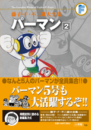

| |

＜少年サンデー掲載集＞
定価1,260円（税込）
A5判／352ページ
好評発売中！
※収録内容は変更になる
場合があります。 |
インテリギャング（67年25号）
箱入りむすこ（67年26号）
通り魔は二度と出ない（67年27号）
ぼくはスターだぞ（67年28号）
八百長プロレス（67年29号）
○ソ○ロコンクール（67年30号）
国際スパイ大作戦（67年31号）
パーマンやめたい（67年32号）
パーマン５号誕生（67年夏季臨時増刊号）
パーマン５号の空き巣退治（67年33号）
鉄の棺おけ突破せよ＜前編＞（67年34号）
鉄の棺おけ突破せよ＜後編＞（67年35号）
★は初めて単行本に収録される作品です。 |
ここほれワンワン（67年36号）
悪人名簿でギクリ（67年37号）
ムキキの社長（67年38号）
パーマンはつらいよ（67年39号）
のぞき事件（67年40号）
パーマンは重税を取る（67年41号）
わがはいの脱獄（67年42号）
パーマンをやっつけろ（別冊67年12月号）
赤い羽根（67年43号）
スーパー星への道（67年44号）
★帰ってきたパーマン（68年正月臨時増刊号） |